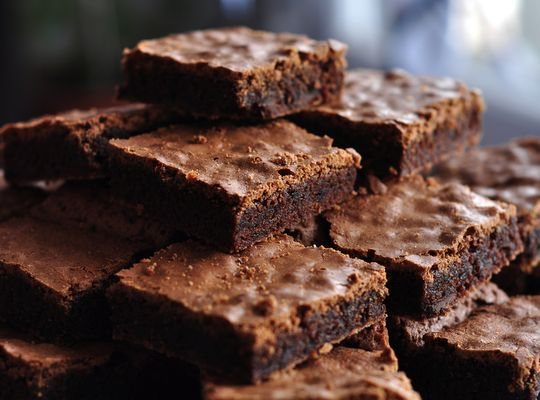

Super Brownie: Fácil e rápido

Super Brownie pronto
O brownie é um doce rápido e fácil de se fazer. Ideal para um lanche alegre com sua família, convidados e amigos.
Então não perde a oportunidade de fazer essa deliciosa sobremeas e impressionar todos a sua volta.
INGREDIENTES
- 5 colheres de manteiga
- 3 ovos
- 3 xicara de achocolatado
- 6 colheres de açúcar
- 12 colheres de farinha de trigo
PASSO-A-PASSO
- Derreta a manteiga e reserve
- Enquanto derrete a manteiga, misture os 3 ovos e a açúcar e misture bem
- Acrescente a manteiga derretida no ovo e o açúcar
- Agora é so misturar o achocolatado e o trigo
- Unte uma forma com manteiga e achocolatado
- Leve ao forno a 180° C por 30 minutos